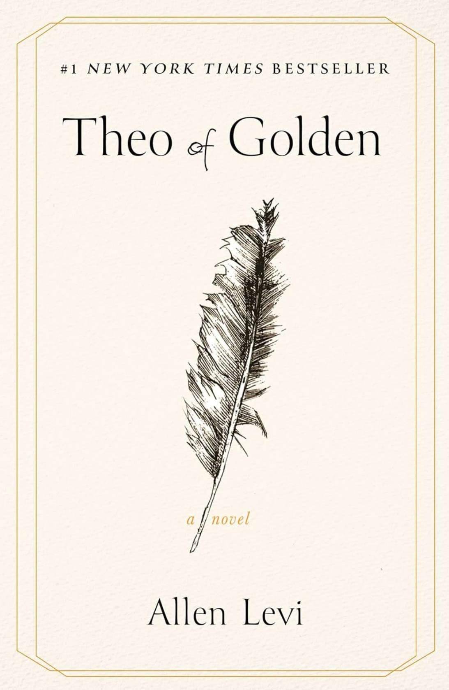

|
這是一本近期佔據話題排行榜的小說。 主角 Theo 是一位 86 歲的葡萄牙人，帶著神秘的身分與謎樣的理由造訪一座位於美國喬治亞州的虛構小鎮 Golden。在金色小鎮上有一間充滿肖像畫的 Chalice 聖杯咖啡廳，由於咖啡廳主人跟畫家的友好關係，所以畫家將肖像畫掛在咖啡廳牆上，既是裝飾也作為一種銷售途徑。肖像畫共有 92 幅，每幅都刻畫不同主人的臉龐，都記錄著肖像主人的名字跟該畫的價碼。而 Theo 要買下所有的肖像畫，並送給肖像所有人。這個情節令我聯想到銀幕女神的七個新郎(Seven Husbands of Evelyn Hugo)，主角莫名被一個昔日的螢幕巨星委託作傳。Theo 跟畫家也是一樣，Theo 莫名地賞識畫家的作品，大手筆地買下他所有作品，而這背後的理由要留給讀者去探索。 當讀者帶著懷疑的心態繼續看下去，便會被 Theo 的善舉給迷惑。Theo 會先包裝好畫像，並手寫信給肖像主人，跟主人約在公園噴泉旁的長椅上面交。非常的老派與紳士，但有禮也友好。Theo 會提問並傾聽主人的故事，會評價他在畫中看到的主人是什麼模樣。這些主人通常都有點故事，而 Theo 總是能在畫中覺察。 不是每個人都願意赴約，不是每個人都能與 Theo 建立友誼，但總有些人能與 Theo 成為朋友。在 Theo 旅居金色小鎮的期間，他與這些朋友維持禮貌但不過度打擾的交流方式，他總是以傾聽別人代替高談闊論，避免過度張揚自己。他總是能表現最大的誠意，給予最多的溫暖。他引導出人們的傷痛，讓人們在訴說中自我修補。他適時地伸出援手，給予人們最需要的幫助。他盡量低調地與人交流，沈默並堅定地面對他人的質疑與惡意。他不分種族、階級、地位的善待他人，也試著了解與銘記對方的喜好。這樣一位不可思議的老人，當然他不缺錢，也並非一生皆問心無愧。讀者一方面好奇 Theo 的目的與信念，一方面又會被 Theo 的善意所感動。而「善」是這本書的終極命題。 無論 Theo 的初衷為何，他的中心思想都是帶給大家最大的善意。而這些願意與他成為朋友的人們，也用同等的善意來回報他。現代人習慣冷漠，將寒暄當成表面功夫。但 Theo 的朋友能看出他值得被認真看待與尊敬，能惺惺相惜，能投其所好，對於 Theo 的神秘點到為止，重要的聚會節日都能相聚在一起，讓彼此感受到親情與友情。 故事想要傳達的是我們可以先投遞橄欖枝，做那個釋放善意的人；也可以跟隨他人，在他人之後學著把善意傳遞出去。在國外的書評中，有人說這是一本傳教的書，而我不同意。在美國，天主教的樞機主教人數位居世界前三大。人們在電影劇集中，也總是可以看到劇中角色上教堂與禱告的情節。在美國，基督教仍有極大的影響力。但不是所有含有教堂、教會的情節就代表是在傳教。人們覺得《埃及王子》很好看也不會就此皈依猶太教。的確在 Theo of Golden 的故事中，有出現聖經故事，但那並非要讀者信教，而是但願人們都能像基督或 Theo 那樣去行善。 行善是選擇。如果能感受到被善待的美好，也請試著感受主動行善的快樂。我想這才是這本書最想要訴說的主題。  書本標題：金色小城的西奧 |
金色小城的西奧 Theo of Golden
羅楨諺│機構技術處＼安規環保認證部